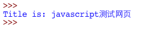
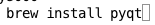
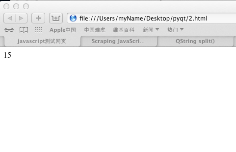
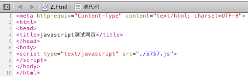
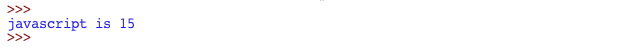

最近，想从中国天气网上抓取数据，其中的网页上的实时天气是使用javascript生成的，用简单的标签解析不到。原因是，那个标签压根就没再网页当中。
所以，google了下python怎么区解析动态网页，下面文章对我很有帮助。
转载记录：Python在Web Page抓取、JS解析方面的介绍
因为我只希望在mac下解析，所以我并没有使用扩平台的库。在使用spidermonkey后，发现它还是很全面，比如document.write就无法执行（如果我的认识有错误，请指出，谢谢）。我将目光落在了pywebkitgtk上，可惜安装不成功，逼迫我放弃了（我有考虑过使用pyv8，但是还是放弃了）。
在经历了失败后，我还是从homebrew这个神器上发现了希望。它可以帮你安装pyqt，可能知道它是一个python的界面库，但是它同样拥有网络模块（webkit），当然也可以使用它来解析网页。
我将分析一下我解析动态网页的过程，此过程实现多于原理学习：
1 <meta http-equiv="Content-Type" content="text/html; charset=UTF-8">
2 <html>
3 <head>
4 <title>javascript测试网页</title>
5 </head>
6 <body>
7 <script type="text/javascript" src="./5757.js">
8 </script>
9 </body>
10 </html>
上面是测试用的html代码，我将解析它的—title标签，很简单，呵呵~
1 #! /usr/bin/env python
2
3 from htmlentitydefs import entitydefs
4 from HTMLParser import HTMLParser
5 import sys,urllib2
6
7 class DataParser(HTMLParser):
8 def __init__(self):
9 self.title = None
10 self.isTag = 0
11 HTMLParser.__init__(self)
12
13 def handle_starttag(self,tag,attrs):
14 if tag == 'title':
15 self.isTag = 1
16
17
18 def handle_data(self,data):
19 if self.isTag:
20 self.title = data
21
22 def handle_endtag(self,tag):
23 if tag == 'title':
24 self.isTag = 0
25 def getTitle(self):
26 return self.title
27
28 url = 'file:///Users/myName/Desktop/pyqt/2.html'
29 #''中内容用浏览器打开，直接复制地址栏的内容即可
30 req = urllib2.Request(url)
31 fd = urllib2.urlopen(req)
32 parser = DataParser()
33 parser.feed(fd.read())
34 print "Title is:",parser.getTitle()
结果是:

1.我假设你已经安装了python。
2.在开始解析动态网页之前，先要安装pyqt，让brew去替你安装，能帮你节省很多精力。。。

了解更多homebrew，请访问官网:homebrew官网
3.说明：本来pyqt是一个GUI库，但它包含了网络模块webkit，这个将用于解析动态网页。
1.有很多标签是动态添加到html网页中的，所以有时候用python去执行javascript可能不能达到条件，比如动态添加的标签，所以获得执行后dom树是一种比较通用的方法。(可能理解不正确，如果不对，请指正)。
2.来写一个给上面html文件外部调用的js文件。
1 alert("这是被调用的语句。")
2 var o = document.body;
3 function createDIV(text)
4 {
5 var div = document.createElement("div");
6 div.innerHTML = text;
7 o.appendChild(div);
8 }
9 createDIV("15");
3.此时，双击2.html，看到的效果是:

只有一个15，这就是我们要解析的数据，现在再来看下源码:

是不是没有div标签，所以现在解析，不可能获取到的，应为div是5757.js添加上去的（js名字乱取的）~
下面就开始解析，我的问题解决受益于这篇文章，希望大家也能看看:Scraping JavaScript webpages with webkit
我们要利用webkit获取执行后的dom树：
1 #! /usr/bin/env python
2
3 import sys,urllib2
4 from HTMLParser import HTMLParser
5 from PyQt4.QtCore import *
6 from PyQt4.QtGui import *
7 from PyQt4.QtWebKit import *
8
9 class Render(QWebPage):
10 def __init__(self, url):
11 self.app = QApplication(sys.argv)
12 QWebPage.__init__(self)
13 self.loadFinished.connect(self._loadFinished)
14 self.mainFrame().load(QUrl(url))
15 self.app.exec_()
16
17 def _loadFinished(self, result):
18 self.frame = self.mainFrame()
19 self.app.quit()
20
21 url = './2.html'
22 r = Render(url)
23 html = r.frame.toHtml()
24 print html.toUtf8()
25
26 # 将执行后的代码写入文件中
27 f = open('./test.txt','w')
28 f.write(html.toUtf8())
29 f.close()
我显示print出来结果，后又将结果写入test.tex文件。现在来看看test.tex中有什么（不要双击，否则只有一个15，用你的文本编辑器去查看，比如:sublime text2）:
1 <html><head><meta http-equiv="Content-Type" content="text/html; charset=UTF-8">
2
3
4 <title>javascript测试网页</title>
5 </head>
6 <body>
7 <script type="text/javascript" src="./5757.js">
8 </script><div>15</div>
9
10 </body></html>
看起来像html代码，但是得到了我想要的东西，注意第八行，出现了div标签~。
最后一步，获取那个15。
停一下，想一下我们怎么去获取：
1 html = r.frame.toHtml()
得到一个QString对象，它不属于python标准库。我想在我熟悉pyqt的始末之前，将它转换成python对象让我感到更加自在一点。我们可以像解析静态网页般区解析它，关键在于这一句：
1 parser.feed(fd.read())
当然既然能将它写入到本地文件，打开文件->解析文件->获取数据也是可以的，但我想没人想那么麻烦。
查阅一下python的文档:
1 HTMLParser.feed(data)
2
3 Feed some text to the parser. It is processed insofar as it consists of complete elements; incomplete data is buffered until more data is fed or close() is called.data can be either unicode or str, but passing unicode is advised.
发现只要将unicode或str传入，我们就能顺利解析，也许稍微改动下代码即可:
1 ! /usr/bin/env python
2
3
4 import sys,urllib2
5 from HTMLParser import HTMLParser
6 from PyQt4.QtCore import *
7 from PyQt4.QtGui import *
8 from PyQt4.QtWebKit import *
9
10 class DataParser(HTMLParser):
11 def __init__(self):
12 self.div = None
13 self.isTag = 0
14 HTMLParser.__init__(self)
15
16 def handle_starttag(self,tag,attrs):
17 if tag == 'div':
18 self.isTag = 1
19
20
21 def handle_data(self,data):
22 if self.isTag:
23 self.title = data
24
25 def handle_endtag(self,tag):
26 if tag == 'div':
27 self.isTag = 0
28 def getDiv(self):
29 return self.title
30
31
32 class Render(QWebPage):
33 def __init__(self, url):
34 self.app = QApplication(sys.argv)
35 QWebPage.__init__(self)
36 self.loadFinished.connect(self._loadFinished)
37 self.mainFrame().load(QUrl(url))
38 self.app.exec_()
39
40 def _loadFinished(self, result):
41 self.frame = self.mainFrame()
42 self.app.quit()
43
44 url = './2.html'
45 r = Render(url)
46 html = r.frame.toHtml()
47 #print html.toUtf8()
48
49 parser = DataParser()
50 parser.feed(str(html.toUtf8()))
51 print "javascript is",parser.getDiv()
52
53
54 #f = open('./test.txt','w')
55 #f.write(html.toUtf8())
56 #f.close()
代码做了简单的合并，就将数据解析出来了，运行结果如下：

呵呵，虽然只有3个词，但的确成功解析了动态标签，呵呵~